Week 11 — Lecture notes
Modulation
Other formats:
📄 PDF- Motivation: wireless communication
- Amplitude modulation
- Demodulation
- Frequency division multiplexing
- Frequency modulation
- Phase modulation.
Based on the lectures of Dennis Freeman, MIT.
Motivation: wireless communication
Example 1
When we transmit audio over a wire, we simply transmit the signal (with some amplification and filtering):
What about when we transmit wirelessly?
The length of the antenna has to be proportional to the wavelength of the signal.
Q: telephone audio contains frequencies from 200–3000\,Hz. What order of magnitude should the antenna length be? \; mm, cm, m, km, \geq 100\,km?
Q: what frequencies of EM are matched to a 10\,cm antenna?
We need a way to shift the signal we want to transmit to the frequencies we can transmit.
Example 2: we saw in the week 5 lecture that there is a tradeoff in radar resolution and bandwidth. A narrow pulse (\tau\,s) corresponds to a wider spectrum. For Kurnell, the pulse width is 1.8\,\mus. The first null of the spectrum is \dfrac{2\pi}{\tau} = 3.5\times10^{6}\,rad/s.
Week 5: the width-\tau pulse and its spectrum (widget)
The spectrum of the pulse is centred at zero. However, if you look up the spectrum assignment in the ACMA (Australian Communications & Media Authority) Licence register, the allocated bandwidth is centred at 5.625\,GHz.
How do we shift the spectrum there?
This is the function of modulation: shifting the frequency spectrum. There is a zoo of modulation techniques.
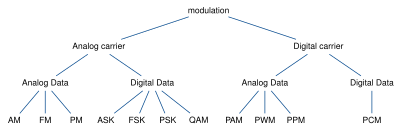
In this lecture, we’ll look at the three methods on the left, AM, FM and PM. They are the basis for many of the other methods.
Amplitude Modulation
This method is already hiding in plain sight on the formula sheet!
u(t)\cos(\omega_0 t) \;\overset{\text{F.T.}}{\rightsquigarrow}\; \tfrac{1}{2}U\big(j(\omega-\omega_0)\big) + \tfrac{1}{2}U\big(j(\omega+\omega_0)\big).
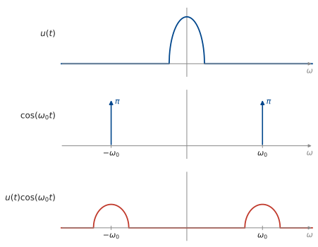
This is called Amplitude Modulation (AM). \cos(\omega_0 t) is called the carrier.
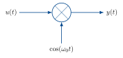
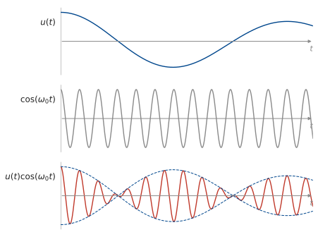
The amplitude of the carrier is modulated by the signal.
Demodulation
How do we recover the signal at the receiver?
If we multiply by the carrier again, we get
\begin{aligned} z(t) &= y(t)\cos(\omega_0 t) \\[6pt] &= u(t)\big(\cos(\omega_0 t)\big)^2 \\[6pt] &= \tfrac{1}{2}u(t)\big(1 + \cos(2\omega_0 t)\big) \end{aligned}
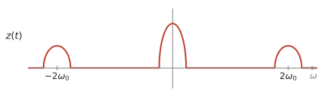
We can then lowpass filter to get back u(t).
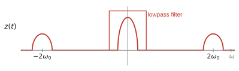
Frequency division multiplexing
What if we want to transmit multiple signals simultaneously? Use separate carrier frequencies: Frequency Division Multiplexing.
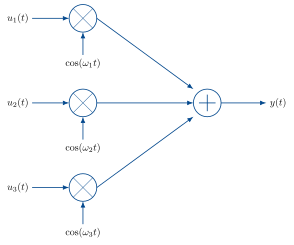
How do we demodulate this sum? The receiver can choose which signal to demodulate by multiplying by the corresponding carrier.
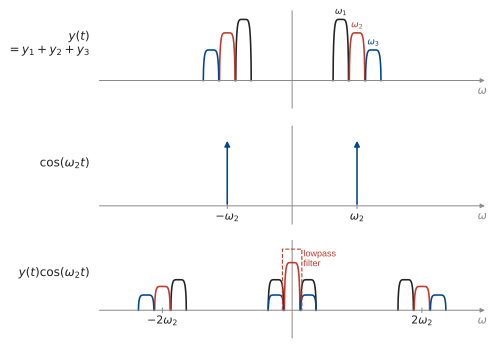
If instead we multiply by \cos(\omega_1 t):
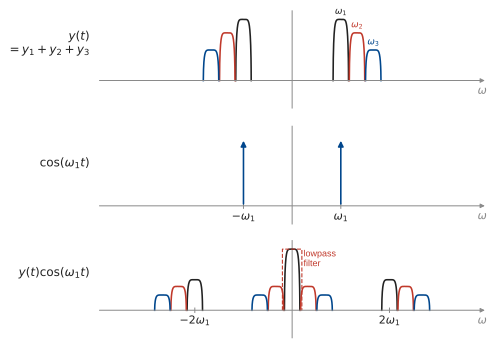
This is how the radio station selector on an AM radio works.
Frequency modulation
There are two other common ways to embed an analog signal in an analog carrier: frequency modulation and phase modulation.
\begin{aligned} &\text{Amplitude modulation:} && y(t) = u(t)\cos(\omega_c t) \\[6pt] &\text{Frequency modulation:} && y(t) = \cos\!\Big(\omega_c t + k\int_{-\infty}^{t} u(\tau)\,\mathrm{d}\tau\Big) \\[6pt] &\text{Phase modulation:} && y(t) = \cos\big(\omega_c t + k u(t)\big) \end{aligned}
For a sinusoid with variable frequency, y(t) = \cos\big(\omega(t)\,t\big), we define the instantaneous frequency to be
\omega_i = \frac{\mathrm{d}}{\mathrm{d}t}\big(\omega(t)\,t\big).
For a sinusoid with constant frequency, \cos(\omega t), this is just the usual frequency: \;\dfrac{\mathrm{d}}{\mathrm{d}t}\,\omega t = \omega.
For an FM signal, the instantaneous frequency is
\begin{aligned} &\frac{\mathrm{d}}{\mathrm{d}t}\Big(\omega_c t + k\int_{-\infty}^{t} u(\tau)\,\mathrm{d}\tau\Big) \\[8pt] &= \omega_c + k\,\frac{\mathrm{d}}{\mathrm{d}t}\int_{-\infty}^{t} u(\tau)\,\mathrm{d}\tau \\[8pt] &= \omega_c + k u(t). \end{aligned}
So the signal u(t) modulates the instantaneous frequency of the carrier.
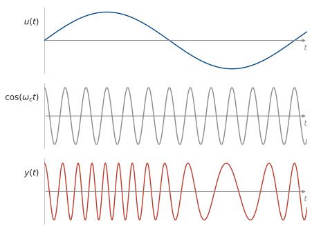
What is the bandwidth of FM?
y(t) = \cos\!\Big(\omega_c t + k\int_{-\infty}^{t} u(\tau)\,\mathrm{d}\tau\Big)
If we let k \to 0, is the spectrum concentrated at \omega_c?
y(t) = \cos(\omega_c t)\cos\!\Big(k\int_{-\infty}^{t} u(\tau)\,\mathrm{d}\tau\Big) - \sin(\omega_c t)\sin\!\Big(k\int_{-\infty}^{t} u(\tau)\,\mathrm{d}\tau\Big)
As k \longrightarrow 0:
\begin{aligned} \cos\!\Big(k\int_{-\infty}^{t} u(\tau)\,\mathrm{d}\tau\Big) &\longrightarrow 1 \\[8pt] \sin\!\Big(k\int_{-\infty}^{t} u(\tau)\,\mathrm{d}\tau\Big) &\longrightarrow k\int_{-\infty}^{t} u(\tau)\,\mathrm{d}\tau. \end{aligned}
So
y(t) \approx \cos(\omega_c t) \underbrace{- \sin(\omega_c t)\,k\int_{-\infty}^{t} u(\tau)\,\mathrm{d}\tau}_{\substack{\text{same bandwidth as AM} \\ \text{– the bandwidth of } \int u(\tau)\,\mathrm{d}\tau}}.
What is the bandwidth for large k?
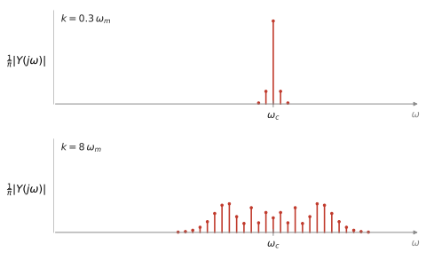
So FM spreads the signal all over the spectrum. This makes it very robust to noise.
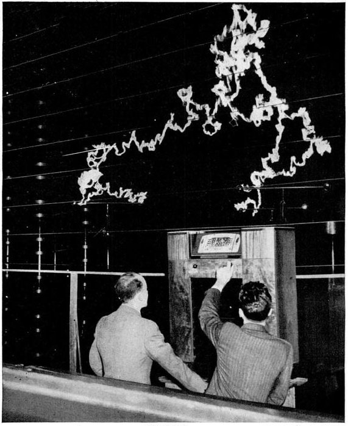
Phase modulation
PM is closely related to FM, but instead of modulating the instantaneous frequency, we modulate phase.
y(t) = \cos\big(\omega_c t + u(t)\big).
This is the same as FM with signal u'(t): calculating the instantaneous frequency of the PM signal, we have
\frac{\mathrm{d}}{\mathrm{d}t}\big(\omega_c t + u(t)\big) = \omega_c + u'(t).
Example: FM Stereo Multiplexing
How do we transmit both left and right audio channels over FM?
We transmit a composite signal that uses AM to carry both channels: \qquad \omega_p = 2\pi\cdot 19\,\text{kHz}.
u(t) = \underbrace{\big(L(t) + R(t)\big)}_{0\text{–}15\,\text{kHz}} + \underbrace{A_p\cos(\omega_p t)}_{19\,\text{kHz}} + \underbrace{\big(L(t) - R(t)\big)\cos(2\omega_p t)}_{23\text{–}53\,\text{kHz}}.
How do we recover L(t) & R(t) at the receiver?
There are 4 steps.
1. Sum recovery.
2. Carrier recovery.
G is a narrow bandpass filter at 19\,kHz.
Squaring the output gives
A_p^2\,|G(j\omega_p)|^2\cos(\omega_p t + \theta)^2 = \tfrac{1}{2}A_p^2\,|G(j\omega_p)|^2\big(1 + \cos(2\omega_p t + 2\theta)\big).
Pass this through a narrow bandpass at 2\omega_p = 2\pi\cdot 38\,\text{kHz} to remove the constant, and normalise amplitude to get \cos(2\omega_p t + 2\theta).
3. Difference recovery.
Multiply u(t) by \cos(2\omega_p t + 2\theta) to get
\begin{aligned} &(L+R)\cos(2\omega_p t + 2\theta) + \colorbox{lightblue}{$A_p\cos(\omega_p t)\cos(2\omega_p t + 2\theta)$} \\[6pt] &\quad + \colorbox{peachpuff}{$(L-R)\cos(2\omega_p t)\cos(2\omega_p t + 2\theta)$} \end{aligned}
Simplify the 2nd & 3rd terms using \cos a\cos b = \tfrac{1}{2}\big(\cos(a-b) + \cos(a+b)\big).
\colorbox{lightblue}{$A_p\cos(\omega_p t)\cos(2\omega_p t + 2\theta)$} = \tfrac{1}{2}A_p\cos(\omega_p t + 2\theta) + \tfrac{1}{2}A_p\cos(3\omega_p t + 2\theta)
\colorbox{peachpuff}{$(L-R)\cos(2\omega_p t)\cos(2\omega_p t + 2\theta)$} = \tfrac{1}{2}(L-R)\cos(2\theta) + \tfrac{1}{2}(L-R)\cos(4\omega_p t + 2\theta).
Putting all the terms together, we get
\begin{aligned} &\underbrace{\tfrac{1}{2}(L-R)\cos(2\theta)}_{0\text{–}15\,\text{kHz}} + \underbrace{\tfrac{1}{2}A_p\cos(\omega_p t + 2\theta)}_{19\,\text{kHz}} + \underbrace{(L+R)\cos(2\omega_p t + 2\theta)}_{23\text{–}53\,\text{kHz}} \\[10pt] &+ \underbrace{\tfrac{1}{2}A_p\cos(3\omega_p t + 2\theta)}_{57\,\text{kHz}} + \underbrace{\tfrac{1}{2}(L-R)\cos(4\omega_p t + 2\theta)}_{61\text{–}91\,\text{kHz}}. \end{aligned}
Passing this through a lowpass filter with cutoff 15\,kHz, we get \tfrac{1}{2}(L-R)\cos(2\theta).
\theta is the filter phase, which is part of the design, so we can divide it off to recover L-R.
4. Channel recovery.
Add: \;L-R + L+R\; to get 2L.
Subtract: \;L-R - (L+R) = -2R.